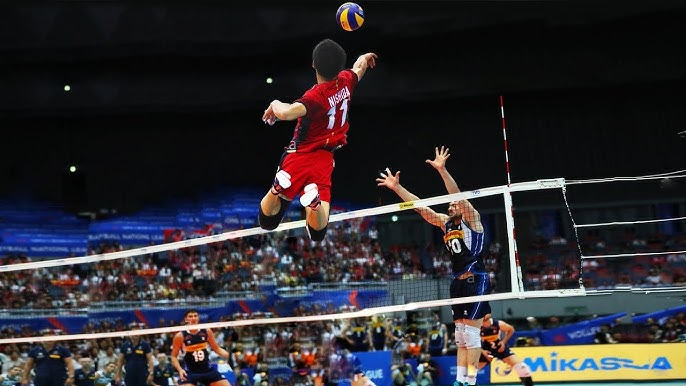

Originally a physical activity but in recent times has expanded to even include chess, e-sports. Several types include some sort of ball, but other sports like horse racing, pole vaulting, etc. do not have one.
Volleyball is played between two teams, each with six players on the court at a time, separated by a net that divides a rectangular court measuring 18 meters long and 9 meters wide into two equal halves. The objective of the game is to send the ball over the net and into the opponent’s court in a way that prevents them from returning it legally, using no more than three touches per side. Play begins with a serve from behind the end line, and teams typically use a pass, set, and attack to return the ball. Volleyball uses rally scoring, meaning a point is awarded on every rally regardless of which team served; points are scored when the ball lands in the opponent’s court, the opponent hits the ball out, or a fault is committed. A set is won by the first team to reach 25 points with at least a two-point lead, and a match is usually played as best of five sets, with the fifth set played to 15 points if necessary. Players rotate positions each time their team wins the serve, and while the ball may be contacted with any part of the body, it cannot be caught or held.
Badminton is a racquet sport played using racquets to hit a shuttlecock across a net. It is usually known as a “single” player sport (with one player per side) and "doubles" (with two players per side). Badminton can be played in casual places such as yards or beaches. In a professional game, it will be played in a rectangular indoor court. The players will attempt to get the scores by using the racquets to strike the shuttlecock and make it land on the other team’s court with only a strike per player.
Basketball is a team sport played between two teams, each typically consisting of five players on the court at a time. The game is played on a rectangular court with a hoop at each end, and the objective is to score points by shooting the ball through the opponent’s hoop while preventing them from scoring. Play begins with a jump ball at the center circle, and teams advance the ball by dribbling or passing. Points are scored based on the location of the shot: two points for field goals made inside the three-point line, three points for shots made beyond the line, and one point for successful free throws. Games are usually divided into four quarters, each lasting 10 or 12 minutes depending on the level of play, with the team having the most points at the end of the game declared the winner. Players must follow rules such as traveling, double dribbling, and shot clock violations, and defensive and offensive strategies are used to maximize scoring opportunities and prevent the opponent from scoring.